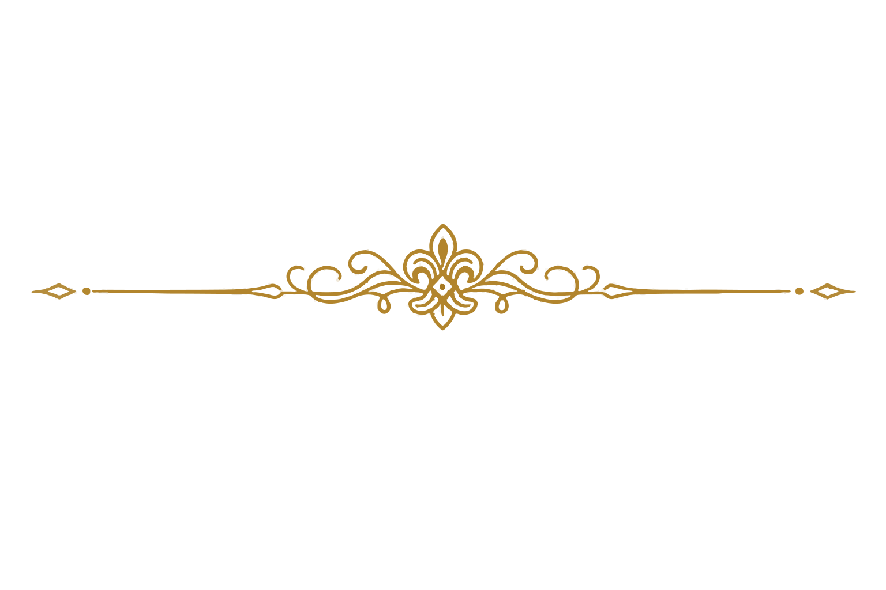

The Grimoire
One casting, many inscriptions. You speak the rite; the runesmith cuts it into code.
咒成于文，文译于师。一咒既立，万法可镌。
xrune is a Rust proc-macro framework. You write a casting in
its declarative DSL, and a runesmith you bind (an
implementation of the seven-method DsRune trait) inscribes
it into whatever code your host actually needs — ECS spawn calls,
a render-tree builder, a debug echo, a formatter round-trip.
The DSL parses; the runesmith decides what the parse becomes. Same casting, many translations.
| Volume | Suffix | Office |
|---|---|---|
xrune | — | Opening scroll. The single dependency a reader summons. |
xrune-nexus | nexus | The hub. AST, the DsRune trait, the decipher walker. |
xrune-incant | incant | The speaking-stone. The ui! { … } proc macro. |
xrune-sigil | sigil | The sigil-forge. The DsRef derive. |
xrune-fmt | fmt | The scribe. Formatter for ui! { … } blocks. |
One DSL, many runes. The same casting can become spawn calls, a render builder, a static analyzer.
Widget names are arbitrary idents; attribute values are arbitrary syn::Expr. All semantics live in the runesmith you bind.
Ship your own proc-macro crate, swap in your own runesmith, and downstream users write the same DSL with your code-gen.